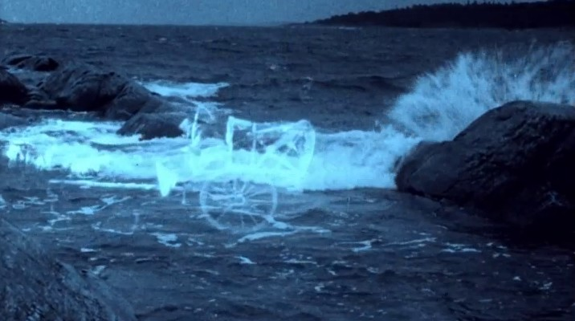

The Phantom Carriage, frame at 21:39
Victor Sjöström · 1921 · Silent film, tinted in this copy (frame)
Free to use
The ghosts were double exposures made in the camera, since optical printing was not available until the early 1930s. Cinematographer Julius Jaenzon used several layers, so a ghost could be hidden by an object and then, in the same take, be seen through as it walked in front of it. The cameras were hand-cranked, and each exposure had to be cranked at exactly the same speed.
Open in The ArtchiveFull-size file ↗
More like this